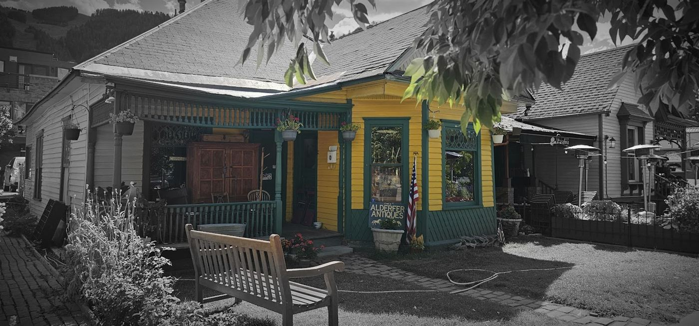
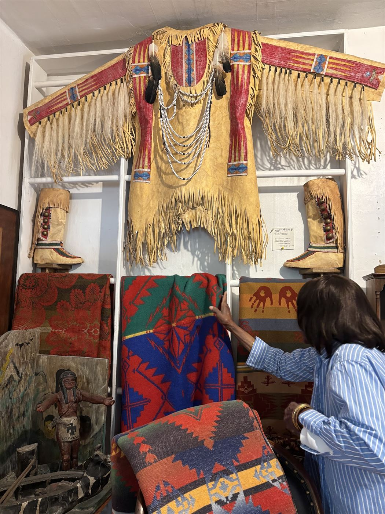
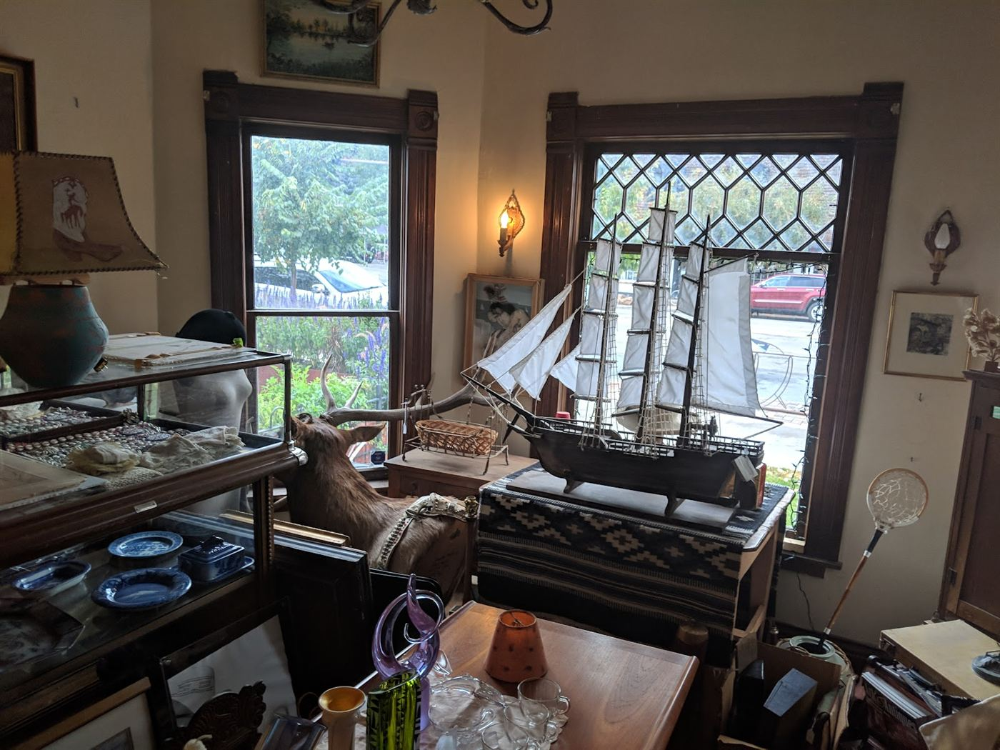
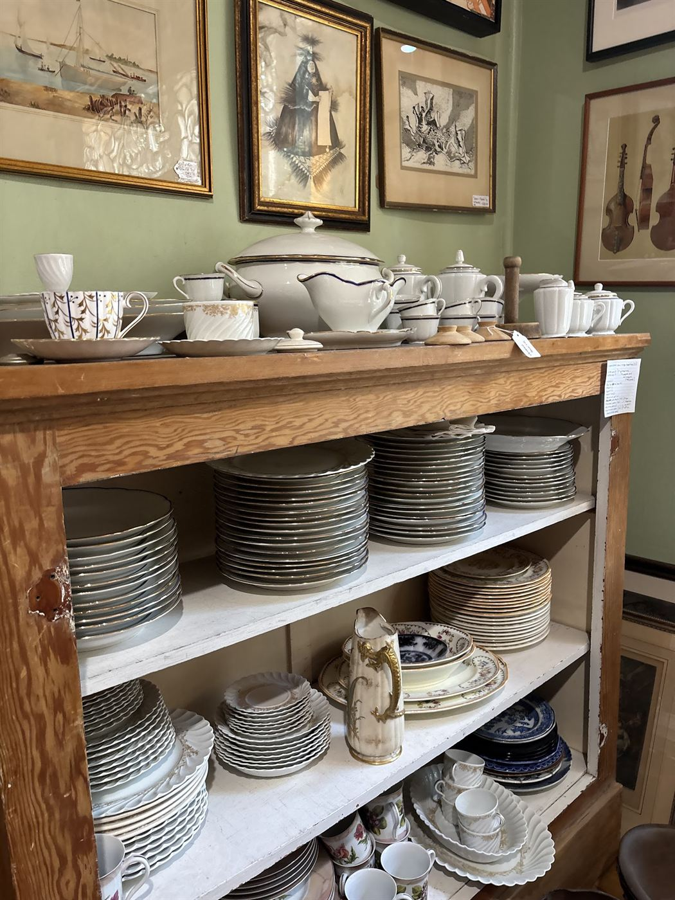
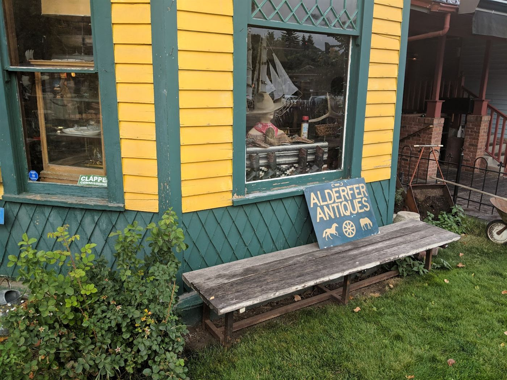
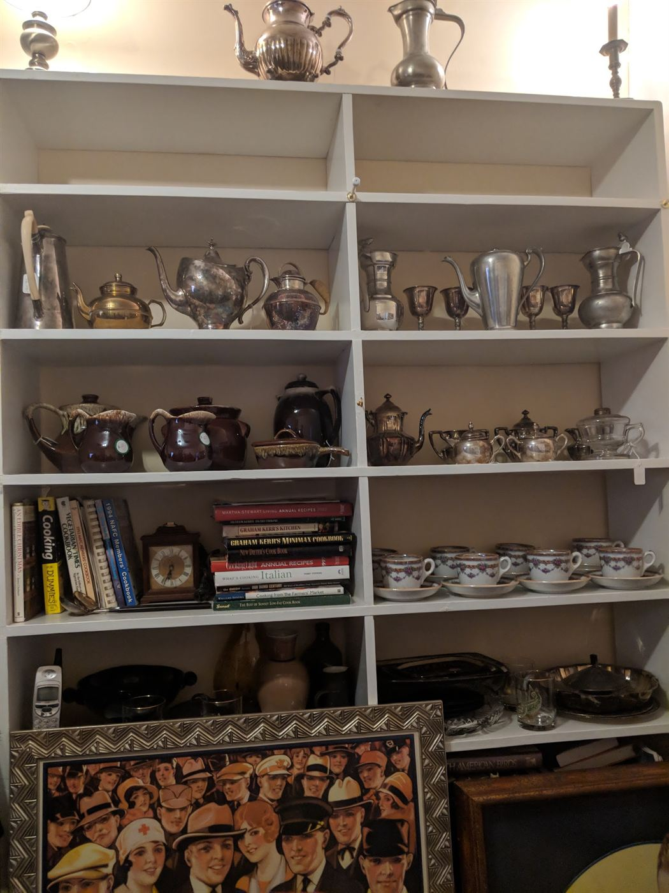
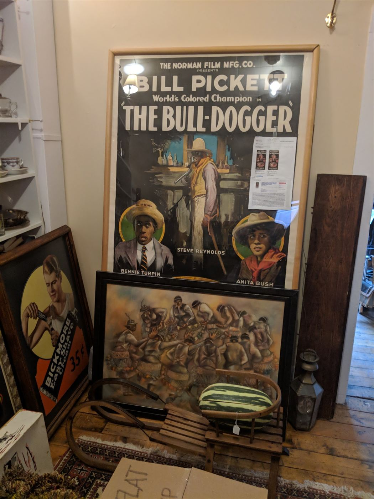

With thanks. These photographs were shared by visitors on the shop's Google listing — credits: Santiago, Imani Jones, elle middleton, and Andrew Schneider.
Better in Person
The Rooms Beat the Photos
&
Photos flatten it. Come see the actual rooms and whatever turned up this week.